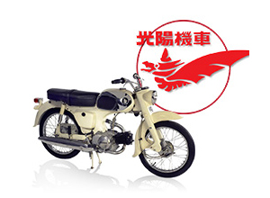
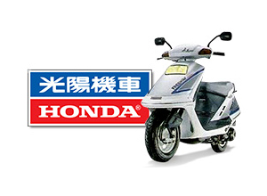
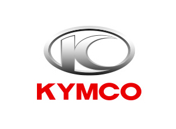

CÂU CHUYỆN LOGO
Câu chuyện về quá trình hình thành và thay đổi logo của KYMCO.

1964-1968
Logo hình đôi cánh, phía trên là Kwang Yang Motor

1968-1992
Logo đổi thành Kwang Yang motor trên và Honda dưới

1992
Logo chỉ còn lại thương hiệu KYMCO